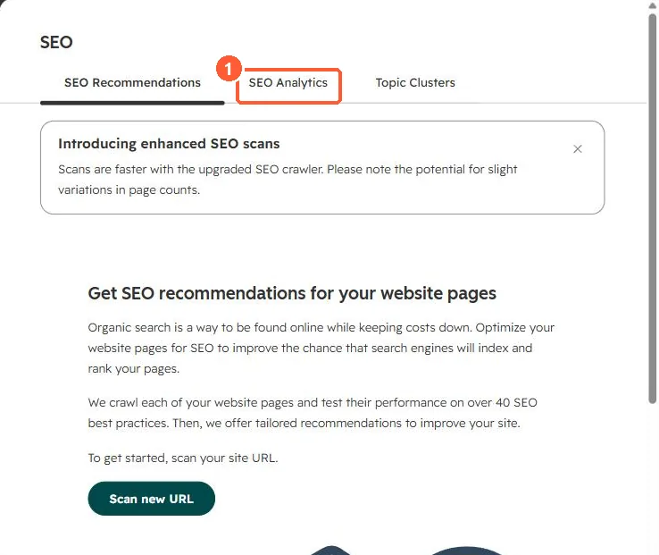

Short answer
The integration brings Google search data into HubSpot's SEO tool. HubSpot's KB says HubSpot-hosted sites are verified automatically with a file only Google's bot can see, for URL-prefix properties. If you use domain properties, you must verify with your DNS provider yourself. Connect it from Settings > Integrations > Connected Apps.
1. Where the data appears
The SEO tool in my demo portal has an SEO Analytics tab, where Search Console data shows once connected.


2. Verification notes
- The hubspotpagebuilder domain needs a published page with a meta tag to verify.
- If a HubSpot-hosted URL-prefix property does not verify automatically, HubSpot says to contact support.